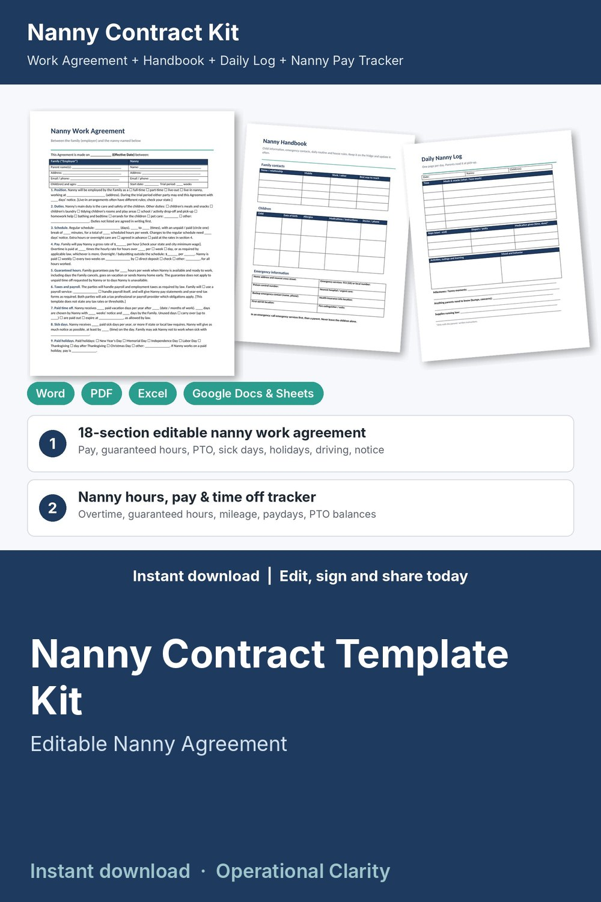

Nanny Contract Template Kit

Hire, onboard and pay your nanny with clear expectations: an editable nanny contract kit with a household handbook, daily log and a working nanny hours, pay and time off tracker, not just a Word file.
WHAT'S INSIDE
- Nanny Work Agreement (Word + PDF): 18 plain-English sections, 2 pages. Position and trial period, duties, schedule, hourly pay and overtime (blanks you fill in to match your state), guaranteed hours, taxes and payroll responsibilities (no rates stated), paid vacation, sick days, paid holidays, expenses, mileage and driving, health and safety, house rules (no physical punishment), confidentiality and social media, cameras, communication and reviews, optional benefits, notice and ending employment, governing law, signatures.
- Nanny Handbook (Word + PDF): family contacts, each child's allergies, medications and doctor, emergency information, daily routine, house rules (screen time, food, naps, visitors, outings, photos), people allowed to pick up.
- Daily Nanny Log & Weekly Timesheet (Word + PDF): meals, naps, diapers, activities and notes for parents; weekly hours, day types, expenses and signatures.
- Trial Period Checklist & Performance Review (Word + PDF): before-day-one and first-week checklist, end-of-trial check-in, review with ratings.
- Nanny Hours, Pay & Time Off Tracker (Excel / Google Sheets, 8 tabs):
* Pay Planner: compare 3 offers (rate x hours), weekly / monthly / yearly gross pay, your cost in a nanny share
* Time Log: daily start, end and break; worked, paid holiday, vacation, sick, family cancelled, unpaid day off
* Weekly Pay: regular and overtime hours, paid leave, guaranteed-hours top-up, gross wages, reimbursements, pay date, status (PAID / DUE / OVERDUE)
* Expenses & mileage reimbursements
* Printable Weekly Pay Summary for your nanny
* Dashboard: gross wages to date, amount due, hours and overtime, vacation and sick days left, monthly chart
- START HERE guide (PDF)
HOW IT WORKS
1. Compare offers on the Pay Planner and agree pay, hours and time off.
2. Fill in and sign the Work Agreement; fill in the Handbook together in the first week.
3. Enter your rate, overtime rule, guaranteed hours and mileage rate on Settings (all your own inputs).
4. Log hours each day; the tracker works out each week's gross pay and shows what is due.
Example data (one nanny, 7 weeks) shows how it all connects; delete it and type your own. Yellow cells = type here, green cells = calculated.
IMPORTANT
The spreadsheet calculates GROSS pay only and does not calculate taxes or withholding. Overtime threshold and multiplier, minimum wage and mileage rate are inputs you set to match your state and city rules. Household employers may have payroll and tax obligations: ask a tax professional or household payroll service.
FORMATS
- Word .docx (edit in Microsoft Word, Google Docs, Pages or LibreOffice) + PDF, US Letter
- Excel .xlsx (works in Excel and Google Sheets)
This is an instant digital download, no physical item will be shipped.
Editable template, not legal, tax or payroll advice. Employment and wage rules for household employees differ by state and city; have it reviewed by a local attorney before you use it. The handbook is information only, not medical advice.